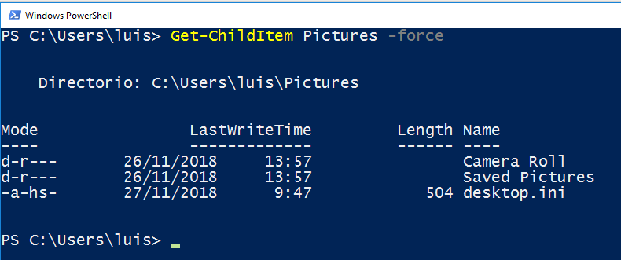
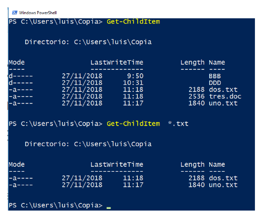
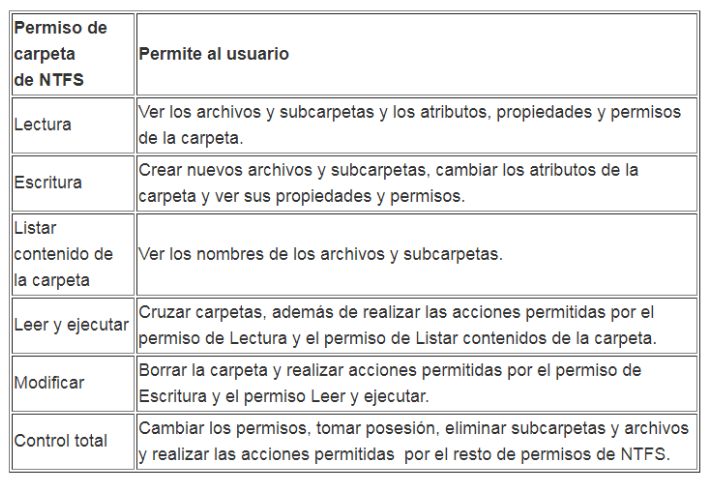
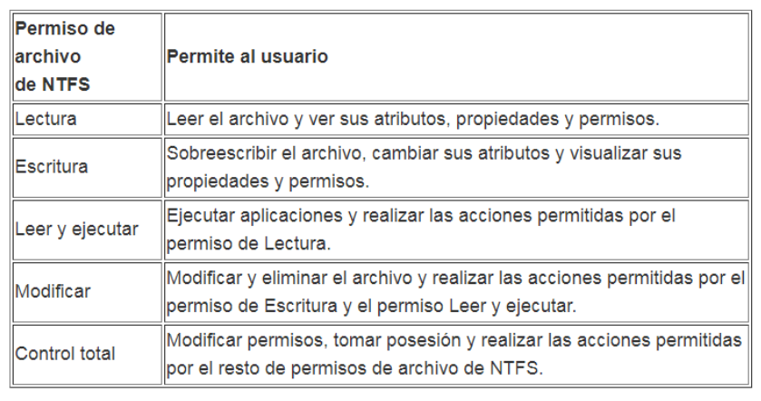
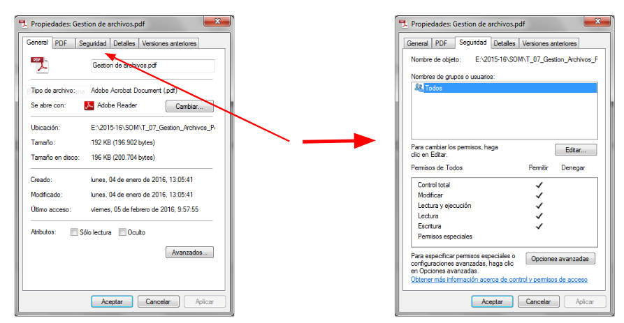
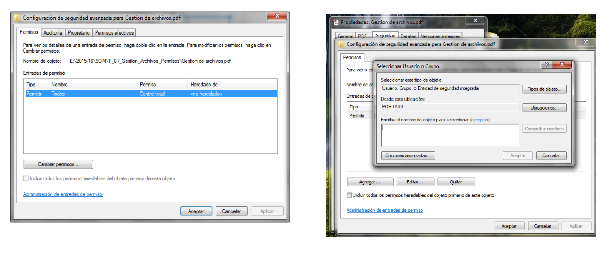

7. Gestión de Directorios y Ficheros en Windows
7.1. Directorios (Carpetas)
7.1.1. Características:
Estas son las características de los directorios en Windows:
- Identificación: Nombre y Extensión: Los directorios se identifican por su nombre. La extensión no es aplicable a los directorios en Windows.
- Propiedades: Tamaño y Ubicación: Los directorios tienen un tamaño asociado, que depende de la cantidad y tamaño de los archivos y subdirectorios que contienen. La ubicación se refiere a la ruta en la que están almacenados.
- Información: Fecha de Creación, etc.: Se almacenan datos relacionados con el directorio, como la fecha y hora de creación, modificación y último acceso.
- Atributos: Propiedades o Permisos del Directorio: Los directorios tienen atributos que definen sus propiedades y permisos de acceso.
7.1.2. Directorios especiales
- Directorio raíz Directorio superior de un disco o partición. (X:)
- Directorio actual Directorio de trabajo. (.)
- Directorio padre Directorio superior al actual. (..)
7.1.3. Operaciones con Directorios:
- Crear un directorio
- Comando:
New-Item “nombre” -itemType Directory
- Comando:
-
Ver el contenido de un directorio
- Comando:
Get-ChildItem [directorio] [-Force] - Atrtibutos de los elementos listados:
- d: Directorio
- a: Archivo
- r: Sólo lectura
- h: Oculto (hidden)
- s: Fichero/Directorio del sistema
- Parámetro
-Force: Para ver los archivos ocultos  - Parámetro
-Recurse: Para ver el contenido del directorio y de todos los directorios incluidos, de forma recursiva - Símbolos comodines
- '*': sustituye a uno o varios caracteres
- '?': sustituye a único carácter 
- Comando:
-
Desplazarse por los directorios
- Comando:
Set-Location Directorio
- Comando:
- Eliminar directorios
- Comando:
Remove-Item Directorio
- Comando:
- Mover directorios
- Comando:
Move-Item Directorio Destino
- Comando:
- Copiar directorios
- Comando:
Copy-Item -Recurse Directorio Destino -Recurse: Para copiar el contenido
- Comando:
- Cambiar el nombre a un directorio
- Comando:
Move-Item NombreActual NuevoNombre
- Comando:
- Listado de directorios
- Comando:
Tree
- Comando:
- Atributos de los directorios
- Comando:
Set-ItemProperty directorio -Name Attributes -Value 'Normal'
- Comando:
7.2. Ficheros
7.2.1. Características:
Estas son las características de los ficheros en Windows:
- Identificación: Nombre y Extensión: Los ficheros se identifican por su nombre y extensión, que indican el tipo de archivo.
- Tamaño y Ubicación: Los ficheros tienen un tamaño y están ubicados en un directorio específico.
- Atributos: Los ficheros heredan los atributos del directorio que los contiene, y pueden tener atributos adicionales como "sólo lectura", "oculto" o "de sistema".
- Información: De cada fichero se guarda: Fecha de Creación, Modificación, Último Acceso, etc.: Se almacena información relacionada con el fichero, como fechas de creación, modificación y último acceso.
7.2.2. Organización de los Archivos:
- Los archivos se ubican en directorios.
- El nombre de un archivo debe ser único dentro de cada directorio.
- Evitar espacios en blanco en los nombres de archivo.
- Caracteres no permitidos en nombres: ? : ’ " > < | \
- Los sistemas de archivos de Windows no distinguen entre mayúsculas y minúsculas.
7.2.3. Compresión de los Archivos:
- Windows tiene herramientas propias de compresión.
- La compresión y descompresión son transparentes para el usuario.
7.2.4. Caracteres Comodines:
Los comodines se utilizan para identificar varios archivos de una sola vez.
- "?" Representa cualquier carácter válido en el nombre de un archivo.
- "*" Representa uno o más caracteres válidos en el nombre de un archivo.
7.2.5. Operaciones con Ficheros
- Crear archivos
- Comando:
New-Item “nombre” -itemType File
- Comando:
- Ver el contenido
- Comando:
Get-Content fichero
- Comando:
- Crear contenido
- Comando:
Set-Content fichero -Value “Hola como estas”
- Comando:
- Borrar fichero
- Comando:
Remove-Item fichero
- Comando:
- Mover ficheros
- Comando:
Move-Item Fichero Destino
- Comando:
- Copiar ficheros
- Comando:
Copy-Item Fichero Destino
- Comando:
- Renombrar ficheros
- Comando:
Move-Item Fichero Nuevo_Nombre
- Comando:
7.2.6. Atributos de los Ficheros
- Comando:
Set-ItemProperty fichero -Name Attributes -Value 'Normal' - Listado de atributos:
- ReadOnly, Hidden, System, Directory, Archive, Normal, Temporary, Compressed, Encrypted
7.2.7. Redireccion de salida
Cuando ejecutamos un comando en Powershell la mayoria de veces nos muestra un texto por pantalla. Este texto podemnos enviarlo a un fichero con una redirección, así:
Get-ChildItem > listado.txt
Este comando envia el contenido del directorio actual al fichero listado.txt. Si el fichero no existe lo crea y si ya existe lo reemplaza.
Si utlizamos una redirección doble >>
Get-ChildItem >> listado.txt
En este caso si el fichero listado.txt existe no lo reemplaza sino que añade el contenido a continuación. Si no existe lo crea
Otro comando interesante es ECHO, que en via a pantalla el texto que escribamos.
Echo "HOLA"
Escribe por pantalla "HOLA"
Y este otro comando
Echo "HOLA" > Mensaje.txt
Envia al fichero Mensaje.txt el texto "HOLA"
7.3. Permisos
En Windows, los permisos de ficheros y directorios son un conjunto de reglas y configuraciones que controlan el acceso y las acciones que los usuarios y grupos pueden realizar en archivos y carpetas. Estos permisos son fundamentales para la seguridad del sistema y para garantizar que los recursos se utilicen de manera adecuada.
Los permisos Básicos son:
- Control Total (Full Control): Otorga el control total sobre el archivo o directorio, incluidos los permisos de lectura, escritura, ejecución y eliminación.
- Lectura (Read): Permite al usuario o grupo ver el contenido del archivo o directorio.
- Escritura (Write): Permite al usuario o grupo modificar el contenido del archivo o directorio.
- Ejecución (Execute): Aplicable a directorios, permite al usuario o grupo ejecutar programas o acceder al contenido del directorio.
Atributos Especiales:
- Solo Lectura (Read-Only): Hace que un archivo o directorio solo pueda ser leído, pero no modificado.
- Oculto (Hidden): Oculta el archivo o directorio de la vista normal del explorador de archivos.
- De Sistema (System): Indica que el archivo o directorio es parte del sistema operativo.
Permisos de CArpetas

Permisos de Ficheros

7.3.1. Herencia de Permisos:
Los directorios pueden heredar permisos de sus directorios principales. Esto facilita la administración de permisos a nivel de carpeta principal.
El usuario que crea un archivo o directorio se convierte en su propietario por defecto. El propietario tiene ciertos derechos especiales.
Los usuarios pueden pertenecer a grupos. Los permisos pueden asignarse a grupos en lugar de a usuarios individuales, facilitando la administración.
7.3.2. Configuración de los permisos
A través de la Interfaz Gráfica:
- Propiedades > Seguridad > Agregar o Modificar permisos.

Opciones Avanzadas

A través de PowerShell:
- Ejemplo
$ruta = "C:\Ruta\Archivo.txt" $acl = Get-Acl $ruta $permiso = New-Object System.Security.AccessControl.FileSystemAccessRule("NombreUsuario", "Read,Write", "Allow") $acl.SetAccessRule($permiso) Set-Acl $ruta $acl